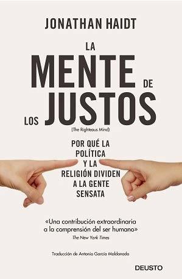

La mente de los justos
Reseña por Jorge I. Zuluaga

Ver reseña en GoodReads (necesita cuenta)
¿Esta bien o esta mal lo que hace el hombre en esta historia? ¿por qué crees eso? ¿piensas que hay una manera universal de justificar tu posición o la de cualquier otro o hay un espectro amplio de posiciones posibles? ¿piensas que alguien salió lastimado con la historia? ¿es tu intuición o tu razón la que te dice que esta mal o que no lo esta? ¿tu juicio racional sobre esta historia, el que usas para describir lo que piensas sobre ella y justificar tu posición, surgió antes o después de que tu mismo supieras si estaba bien o estaba mal?
La historia del hombre y del pollo es una de las cientos de historias que psicólogos culturales de las últimas décadas, como lo es el mismo Jonathan Haidt, el autor de este maravilloso libro, han usado para "hackear" las intuiciones, las "matrices morales" (como las define el autor) de decenas de miles de personas en el mundo (no solo en occidente).
Las respuestas que des a estas preguntas definen en que punto del "espacio moral" te encuentras: si eres monista (crees que hay verdades morales únicas que debemos buscar y formular) o pluralista (reconoces la existencia de una amplia diversidad de matrices morales que no son mutuamente excluyentes), si eres liberal (te preocupa el cuidado, la libertad y la equidad y casi nada la lealtad, la tradición y la "santidad") o conservador (tienes todos los "receptores gustativos" morales mencionados en el paréntesis anterior), libertario (crees que todos tenemos derecho a hacer lo que queramos sin control de ninguna autoridad) u ortodoxo (crees que las leyes morales descienden directamente de una autoridad, normalmente religiosa).
Incluso, y más importante, las respuestas que des a las preguntas que he formulado (inspirado naturalmente por el libro) podrían definir cuál es tu posición frente a otras matrices morales, tu capacidad de entender la manera como otros muy distintos a ti juzgan lo que esta bien y lo que esta mal, lo que es justo y lo que no lo es.
Y es justamente la evaluación de esa última capacidad la que hace tan increíblemente importante este libro.
Se me quedan cortos los superlativos.
Los que conocen mis reseñas saben que no soy un crítico ácido. Que al escribir sobre las creaciones de otros me comporto más como un niño en una tienda de dulces que disfruta del sabor de cada bocadillo como si fuera mejor que el anterior. Tal vez un "reseñista" así no es confiable (¿o tal vez solo alguien así lo es?). Pero les puedo asegurar, y espero confíen en mí, que mis intuiciones sobre el valor de este libro (porque no podría llamarlas de otra manera, no soy un experto ni en psicología, ni en sociología, ni en política o antropología, las áreas centrales de las que se alimenta y sobre las que se apoya el autor para construir esta increíble síntesis) no sobreestiman su increíble valor.
Sé que apoyarme en un solo dato para medir el impacto del contenido de este libro es poco científico. Pero no puedo hablar por nadie más. Ese solo dato soy yo: un liberal progresista, con tendencias libertarias (en la definición provista en el libro), beligerante activista del "nuevo ateísmo" (ateísmo a la Dawkins), anticonservador, antiortodoxo. En síntesis, una "mente justa" (risas).
Una mente que después de este libro no tiene sino dudas y un poco de (¡o tal vez mucha!) vergüenza por haber sostenido por mucho tiempo (y seguir sosteniendo porque no tengo mucha esperanza de que mi "elefante" interior - usando la maravillosa metáfora de Haidt - cambie mucho por un libro) una ideología moral tan alejada de la evidencia científica acumulada por psicólogos por décadas. Pero peor, tan potencialmente nociva (o simplemente, igualmente nociva a todas las ideologías similares).
En mi defensa (y en la de todos los que lleguen a decir lo mismo después de leer este libro) puedo decir que, como pasa con casi todo, era mi ignorancia (repito, no creo que vaya a cambiar mucho, estoy viejo). ¿Cómo estar al tanto de la innumerable cantidad de "descubrimientos" citados en el texto?. Pero también: ¡¿cómo no estarlo?! ¡¿cómo es que nadie había hecho (¿seré también ignorante al afirmar tan categóricamente esto?) una síntesis legible por todos como la que hace Haidt?!
Esta es la característica más importante de este libro. Estamos ante una síntesis comprensible y "popular" (el libro se ha vendido mucho) de muchos avances en la psicología cultural que creo nadie había logrado hasta ahora. O por lo menos no como lo hace Haidt.
Como buen psicólogo, el autor apela a tus instintos para ir construyendo su caso (o convenciéndote de su valor). Los primeros capítulos son fáciles de leer. Contienen metáforas y símiles que todos podemos entender. Apela a anécdotas e historias personales con las que te conectas fácilmente; y, como buen libro de ciencia, describe experimentos que usan historias como aquellas con las que abrí esta reseña. Historias que no puedes no disfrutar.
El resultado: es difícil no quedar enganchado. ¡Has caído en la "trampa"!
Más adelante el texto se hace más científico, más difícil de leer. Es especialmente difícil leer todos los pies de páginas, pero algunos son muy relevantes (aunque en esta edición de Ariel están un poco mal traducidos) así que no dejen de leerlos.
Les recomiendo a todos que traten de no desanimarse cuando lleguen a las partes más densas del libro (especialmente los capítulos 9 y 10, aunque igual yo disfrute como niño, precisamente porque soy científico). Pueden, en un caso extremo, saltarlos (¡no lo recomiendo!). El premio a la constancia serán los capítulo 10 y 11, el quid del asunto: la respuesta que la psicología (al menos la evidencia seleccionada por el autor) da a los dilemas sobre si la religión es importante o no para la sociedad y sobre si algún día podremos resolver nuestras crecientes diferencias políticas.
No quiero avanzarles nada para no arruinar la "sorpresa", pero solo les adelanto una cosa: este es un libro que "golpeará" a liberales y ateos por igual. Aquellos que nos consideramos la fuente de sabiduría ilustrada, el faro racional que ilumina a un mundo poblado de mentes debilitadas por la superstición y el patrioterismo, aquellos que soñamos con un mundo sin fronteras, sin bandos, sin equipos. Los justos, para ponerlo en pocas palabras, somos los grandes "perdedores" de esta historia.
Suena duro. Suena a propaganda conservadora (el autor en todas partes se declara liberal y ateo, al menos de formación). Pero pensando y reflexionando, sobre la base de la evidencia es difícil no aceptar esa conclusión.
Pero hay esperanza para los que compartimos la limitada matriz liberal: tal vez, precisamente, nuestros centenarios valores intelectuales nos hagan resilientes ante la arrolladora evidencia recogida por Haidt y de todo, quizás pueda surgir una nueva "matriz moral" que no se encasille en las clásicas izquierda-derecha, creyente-ateo, libertario-ortodoxo.
Yo sé que está es solo una reseña y que yo soy solo un lector-científico muy emocional (aunque descubrí con este libro que no debo avergonzarme de ello); yo sé que este es solo un libro más de muchos que se seguirán escribiendo sobre el tema. Pero si logro que otros como yo lean "La mente de los justos" y sientan (y piensen) algo de lo que me hizo sentir y pensar este libro, habrán valido la pena los superlativos.